Inicio › Apps › Burako SumoGame
Burako SumoGame
El Burako argentino en el celular: fichas grandes, colores alegres, contra la CPU o cara a cara entre dos celulares.
El Burako de siempre, grande, colorido y fácil de leer.
Privacidad: la partida guardada y las estadísticas quedan sólo en tu celular; no hay cuentas ni publicidad. Dos jugadores no usa servidores: los celulares se hablan directo en tu Wi-Fi o por Bluetooth (en Android 12 o más pide el permiso «Dispositivos cercanos»). La cámara se usa sólo para leer el código QR y no se guarda ninguna imagen. Una partida entre dos celulares no se puede retomar si se corta la conexión. No fue probada todavía en todos los equipos.
Para celulares Android 9 o más nuevos.
Pago seguro con Mercado Pago · Sin publicidad · Pago únicoBotón de arrepentimiento
Pago seguro · Podés arrepentirte dentro de los 10 días.
Sin publicidad. Nunca.Pagás una vez y la app es tuya: sin banners, sin videos que te hacen esperar, sin interrupciones. Por qué cobramos
¿Te aparece un aviso al instalar (Play Protect u «orígenes desconocidos»)? Cómo instalar paso a paso — celular y TV.

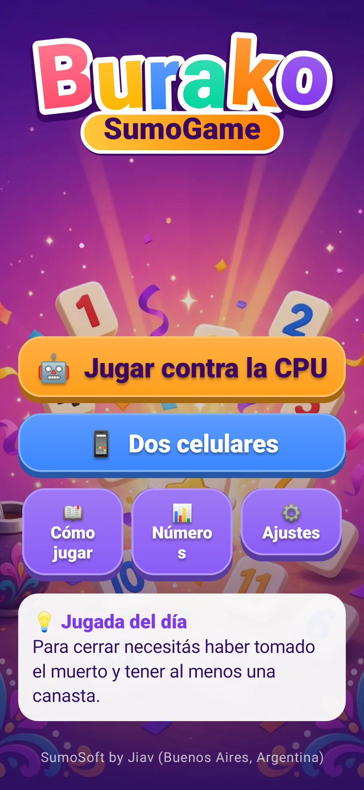
El Burako de siempre, ahora ilustrado
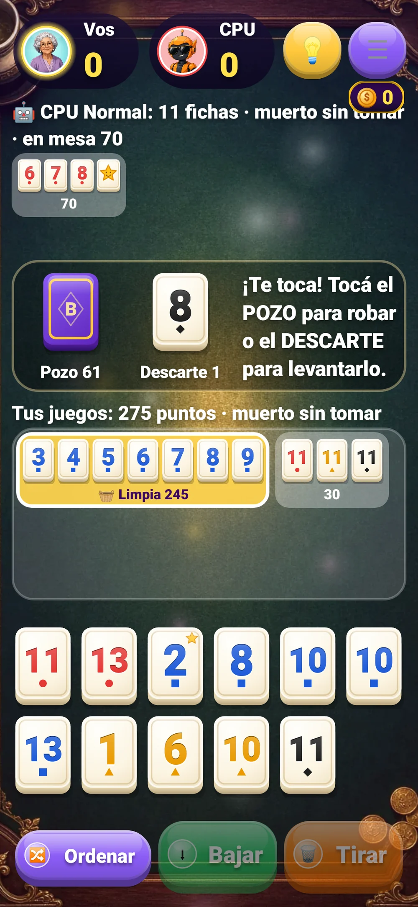
La mesa de paño: fichas grandes y avatares
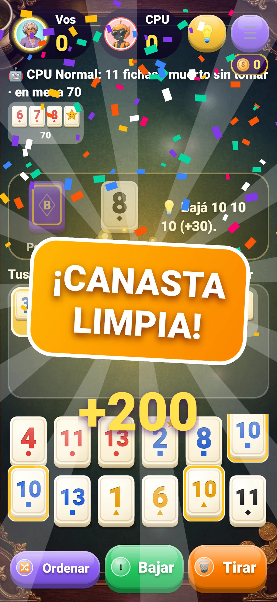
¡Canasta limpia! Destello y confeti¡Medalla de oro! Festejo de casino

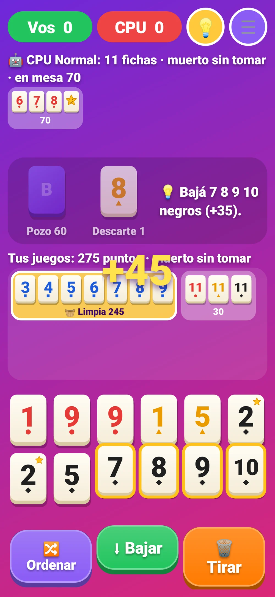
Mis medallas: 23 para ganar
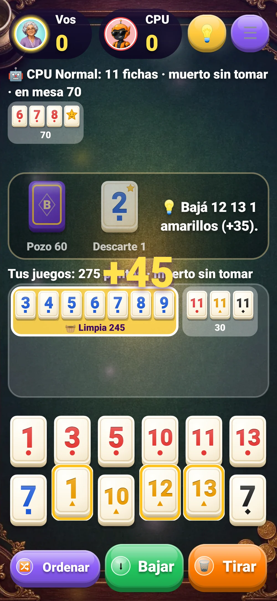
Escena de victoria
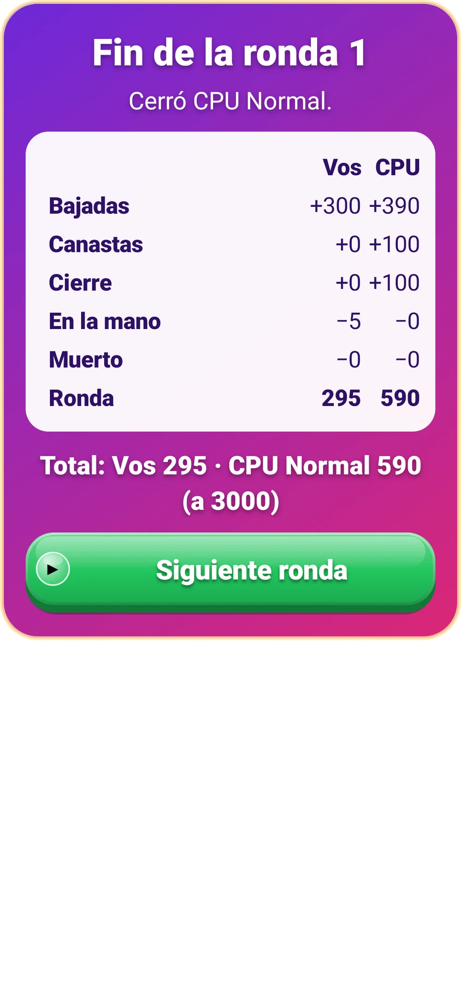
La lamparita te sugiere la jugada
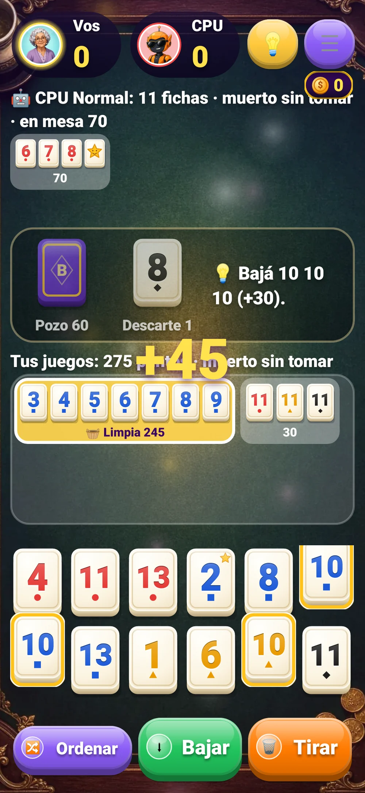
Los puntos se acercan y se desvanecen
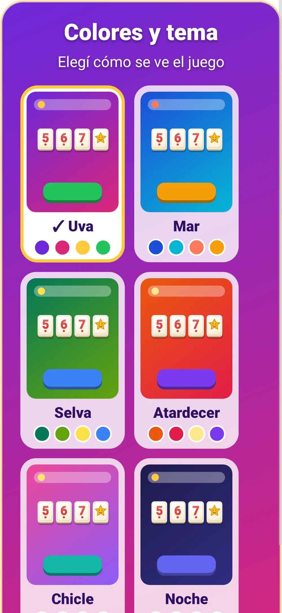
Puntaje de la ronda, bien clarito
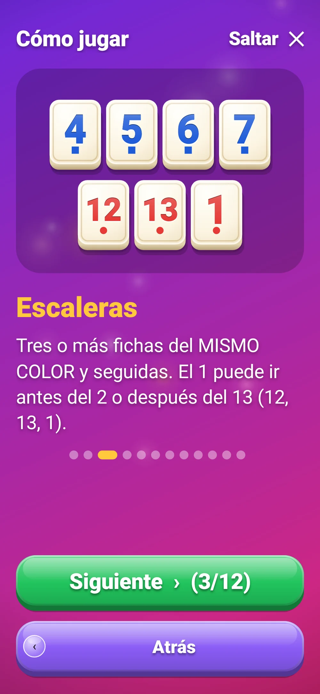
Guía ilustrada con las reglas Seis temas con vista previa
Seis temas con vista previa
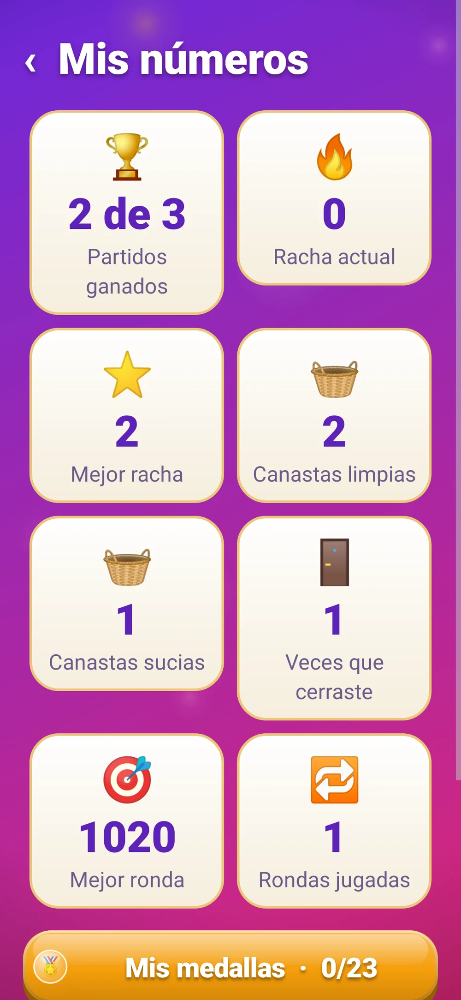
Tus números: partidos, rachas y canastas
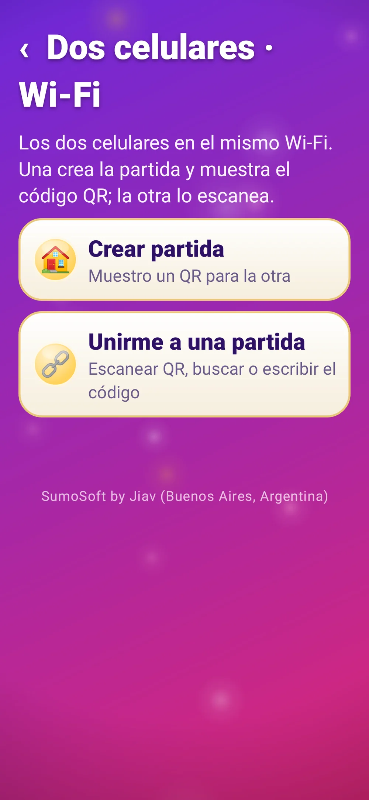
Dos celulares por Wi-Fi o Bluetooth
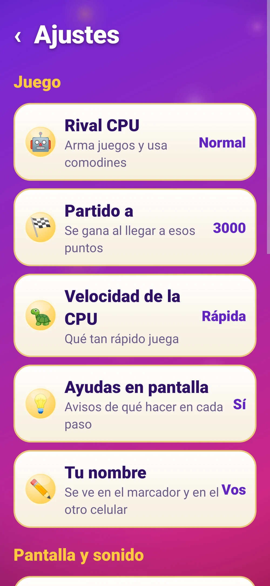
Reducir efectos para celus lentosLo que la hace distinta
- 🔠 Hecha para leer fácil: fichas y números grandes, botones enormes.
- 💡 Una lamparita que te sugiere la jugada cuando dudás.
- 🎉 Confeti en las canastas y puntos que se acercan al sumar.
- 📱 Cara a cara entre dos celulares con un QR, sin internet.
- 💾 Se guarda sola: seguís donde quedaste.
- 🚫 Sin publicidad. Nunca.
Qué es
Burako SumoGame es el Burako argentino de siempre, pensado para que se lea y se toque fácil: fichas grandes con números gordos, botones enormes y colores alegres. Jugás contra la CPU en tres niveles (Tranqui, Normal o Experta) o cara a cara con otra persona, cada una en su celular, por Wi-Fi o Bluetooth y sin internet: una muestra un código QR y la otra lo escanea. Tiene todas las reglas: 106 fichas, comodines y doses, escaleras y piernas, canastas limpias y sucias, muertos, cierre y puntaje hasta 3000. Cuando sumás, los puntos se acercan y se desvanecen; cuando hacés canasta, hay confeti. Una lamparita te sugiere la jugada, la partida se guarda sola y tenés tus estadísticas. Sin publicidad.
Qué hace
- Jugás al Burako argentino contra la CPU: tocás el pozo para robar o el descarte para levantarlo, elegís fichas tocándolas y apretás «Bajar», y terminás tirando una. También se pueden arrastrar.
- Reglas completas: escaleras del mismo color (el 1 va antes del 2 o después del 13) y piernas del mismo número, un comodín por juego (los 2 también son comodín), canastas de 7 (limpia 200, sucia 100), muerto de 11 fichas para cada una (si no lo tomás, resta 100) y cierre con canasta (+100). Partido a 1500, 2000 o 3000.
- Tres niveles de CPU: Tranqui, Normal y Experta. La Experta guarda los comodines, no tira fichas que te sirvan y mira lo que levantás.
- Dos celulares: una crea la partida y muestra un código QR; la otra lo escanea (o elige la partida de la lista, o escribe el código). Por Wi-Fi o Bluetooth, sin internet ni cuentas.
- La partida contra la CPU se guarda sola después de cada jugada y se retoma con «Seguir partida». Estadísticas: partidos ganados, rachas, canastas limpias y sucias, cierres y mejor ronda.
- Pensada para leer y tocar fácil: fichas y letras grandes, marcas de forma para cada color, botón de pista 💡, avisos de qué hacer en cada paso, seis temas de colores y sonidos suaves.
Requisitos
- Celular Android 9 o más nuevo
- Para dos jugadores: mismo Wi-Fi, o Bluetooth con los celulares vinculados
- Cámara sólo para escanear el QR (opcional)
Funciones
- 🀄 Reglas completas del Burako argentino: 106 fichas, comodines y doses, muertos, canastas limpias y sucias, cierre
- 🤖 Contra la CPU: Tranqui, Normal o Experta (la Experta no te regala nada)
- 📱 Dos celulares por Wi-Fi (con QR) o Bluetooth, sin internet
- 🔠 Fichas grandes, letra grande y botones enormes: fácil para todos
- 💡 Botón de pista: te dice qué robar, qué bajar y qué tirar
- ✨ Arte nuevo estilo consola: mesa ilustrada, botones brillantes, fichas de marfil con bisel y avatares
- 🎉 Fichas que vuelan y se dan vuelta, sacudón y destello en cada canasta, escenas de victoria y derrota
- 🏅 23 medallas de bronce, plata y oro, monedas y pantalla «Mis medallas» con progreso
- 🎰 Festejos estilo casino al ganar medallas: giro, rayos, lluvia de monedas y contador tragamonedas
- 🐢 «Reducir efectos» para celulares lentos
- 💾 La partida se guarda sola; estadísticas de partidos, rachas y canastas
- 🎨 Seis temas de colores con vista previa · sonidos suaves · jugada del día
- 📖 Guía ilustrada «Cómo jugar» con todas las reglas
Cómo se instala
- Descargá el APK e instalalo (si Android pregunta, permití instalar desde el navegador).
- Abrila: aparece la guía «Cómo jugar» con las reglas (se puede saltar y volver a ver desde Ajustes).
- Tocá «Jugar contra la CPU» y elegí el nivel, o «Dos celulares». Para comprar: «Activar» → «Comprar con Mercado Pago».
Novedades
- 1.3.0 — Música y sonidos con las mismas reglas: tres músicas tranquilas compuestas para el juego (Café, Tango suave y Sobremesa), fichas que suenan de verdad al robar, levantar, bajar, acomodar y tirar, y sonidos propios para canasta, cierre, victoria y medallas. En Ajustes → Música y sonidos hay controles separados de música y efectos, con volumen. La música se pausa sola al salir de la app.
- 1.2.0 — Medallas y premios (mismas reglas): 23 medallas de bronce, plata y oro, monedas, pantalla «Mis medallas» con progreso, festejos estilo casino durante el juego (se tocan para saltear y nunca tapan tus fichas en tu turno), combos con chispas, brillo dorado en juegos de mucho valor y sonidos de casino suaves. «Reducir efectos» los simplifica.
- 1.1.0 — Lavado de cara visual, con el mismo juego y las mismas reglas: mesa ilustrada con parallax, botones brillantes con ícono y barrido de luz, fichas de marfil con bisel, marcador con avatares y puntos que cuentan, fichas que vuelan y se dan vuelta, sacudón y destello en las canastas, transiciones y escenas de victoria y derrota. Nuevo: Ajustes → «Reducir efectos».
- 1.0.1 — Prueba de 7 días a prueba de reloj mal puesto: si el equipo arranca con la fecha atrasada (TV box sin pila), la tarjeta de prueba ahora se muestra siempre con los días que quedan y el tiempo se cuenta con el reloj interno del equipo; atrasar la hora ya no regala ni esconde días. Botón «Comprar con Mercado Pago» siempre habilitado (en algunos equipos se veía gris).
- 1.0.0 — Primera versión.